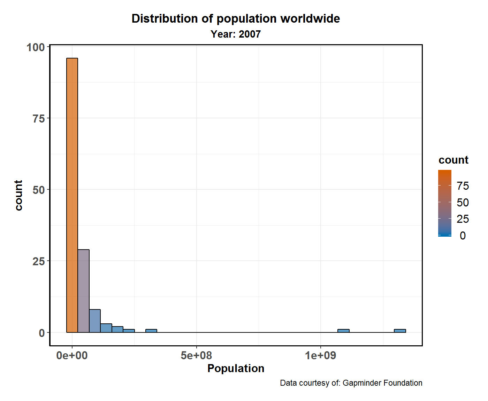
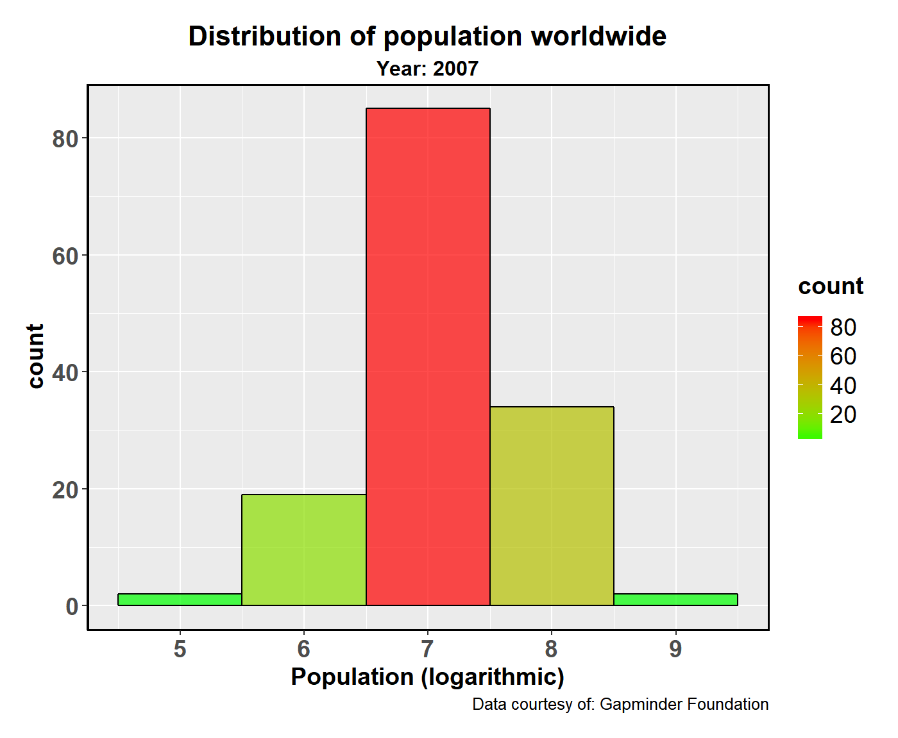
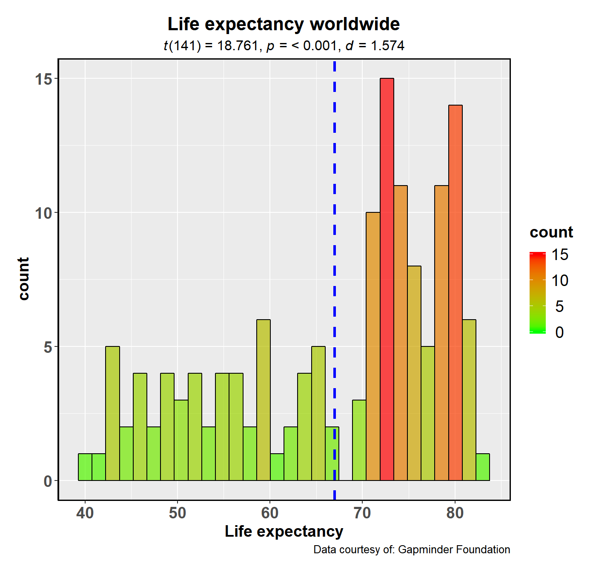
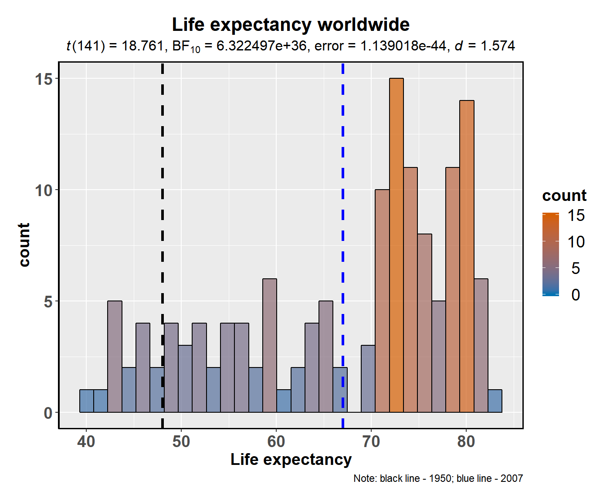
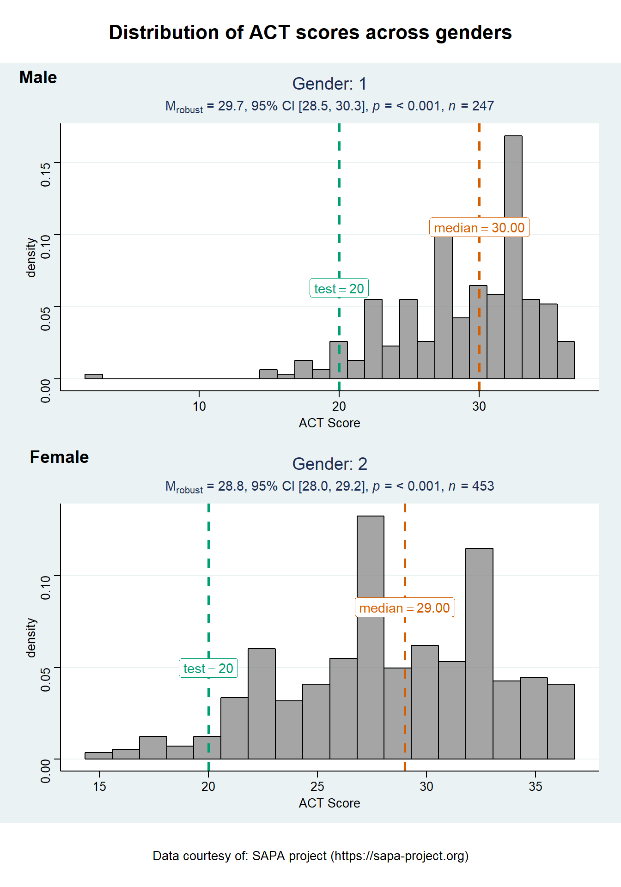
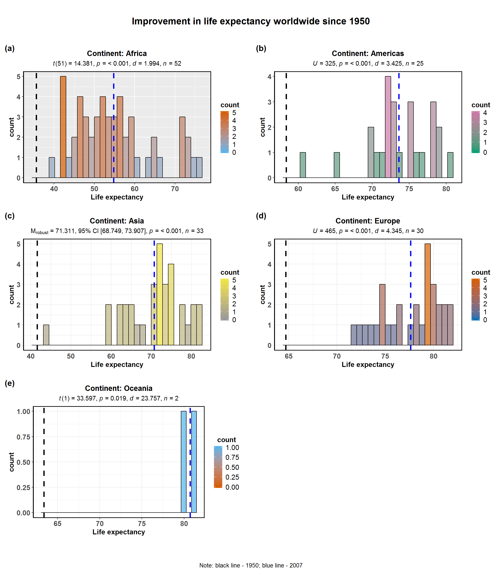

The function ggstatsplot::gghistostats can be used during data exploration phase and is also meant to provide an easy way to make publication-ready histogram with all statistical details included in the plot itself. We will see examples of how to use this function in this vignette with the gapminder dataset.
To begin with, here are some instances where you would want to use gghistostats-
Note before: The following demo uses the pipe operator (%>%), so in case you are not familiar with this operator, here is a good explanation: http://r4ds.had.co.nz/pipes.html
gghistostats
To illustrate how this function can be used, we will use the gapminder dataset. This dataset (available in eponymous package on CRAN) provides values for life expectancy, GDP per capita, and population, every five years, from 1952 to 2007, for each of 142 countries and was collected by the Gapminder Foundation. Let’s have a look at the data-
library(gapminder)
library(dplyr)
dplyr::glimpse(x = gapminder::gapminder)
#> Observations: 1,704
#> Variables: 6
#> $ country <fct> Afghanistan, Afghanistan, Afghanistan, Afghanistan, ...
#> $ continent <fct> Asia, Asia, Asia, Asia, Asia, Asia, Asia, Asia, Asia...
#> $ year <int> 1952, 1957, 1962, 1967, 1972, 1977, 1982, 1987, 1992...
#> $ lifeExp <dbl> 28.801, 30.332, 31.997, 34.020, 36.088, 38.438, 39.8...
#> $ pop <int> 8425333, 9240934, 10267083, 11537966, 13079460, 1488...
#> $ gdpPercap <dbl> 779.4453, 820.8530, 853.1007, 836.1971, 739.9811, 78...Suppose the first thing we want to check is the distribution of population worldwide in 2007. In this case, we are not interested in any statistics and, therefore, can set the results.subtitle argument to FALSE.
library(ggstatsplot)
gapminder::gapminder %>%
dplyr::filter(.data = ., year == 2007) %>% # select data only from the year 2007
ggstatsplot::gghistostats(
data = ., # data from which variable is to be taken
x = pop, # numeric variable
results.subtitle = FALSE, # don't run statistical tests
messages = FALSE, # turn off messages
xlab = "Population", # x-axis label
title = "Distribution of population worldwide", # title for the plot
subtitle = "Year: 2007", # subtitle for the plot
caption = "Data courtesy of: Gapminder Foundation", # caption for the plot
centrality.k = 0 # show 0 decimal places for centrality label
)
Although this plot is useful, it is still not satisfactory as most of the mass seems to be concentrated at 0 due to the large range of numbers. We can remedy this by converting population to logarithmic scale. We can additionally adjust binwidth so that we have bins for every increase in order of magnitude.
gapminder::gapminder %>%
dplyr::filter(.data = ., year == 2007) %>% # select data only from the year 2007
dplyr::mutate(.data = ., pop_log = log10(pop)) %>% # creating new population variable
ggstatsplot::gghistostats(
data = ., # data from which variable is to be taken
x = pop_log, # numeric variable
results.subtitle = FALSE, # don't run statistical tests
messages = FALSE, # turn off messages
xlab = "Population (logarithmic)", # x-axis label
title = "Distribution of population worldwide", # title for the plot
subtitle = "Year: 2007", # subtitle for the plot
caption = "Data courtesy of: Gapminder Foundation", # caption for the plot
binwidth = 1 # new binwidth
)
So far we have been showing both the count and proportion information with the bar chart: showing count gives an idea about raw counts, while proportion gives information about proportional prevalence of values in a certain range.
Other possible options are: (only) "count", (only) "proportion", or "density" information.
This shows the utility of gghistostats in case of data exploration.
gghistostats
Let’s say we are now interested in investigating whether the mean life expectancy in 2007 across the world has improved during the 20th-Century. In 1950, it was 48, so this is the test.value we are going to use.
gapminder::gapminder %>%
dplyr::filter(.data = ., year == 2007) %>% # select data only from the year 2007
ggstatsplot::gghistostats(
data = ., # data from which variable is to be taken
x = lifeExp, # numeric variable
messages = FALSE, # turn off messages
test.value = 48, # test value against which sample mean is to be compared
xlab = "Life expectancy", # x-axis label
title = "Life expectancy worldwide", # title for the plot
subtitle = "Year: 2007", # subtitle for the plot
caption = "Data courtesy of: Gapminder Foundation", # caption for the plot
centrality.para = "mean", # plotting centrality parameter
ggtheme = ggthemes::theme_wsj(), # change the default theme
fill.gradient = FALSE # turn off color fill gradient
)
Although there are still some countries where the life expectancy is low, on average, the life expectancy worldwide has improved compared to what it was in 1950.
gghistostats also provides the opportunity to compute Bayes Factors to quantify evidence in favor of the alternative (BF10) or the null hypothesis (BF01). In practice, you need to compute only one and the other will just be the inverse. In the current example, let’s say we want to quantify evidence in favor of the alternative hypothesis (H1) that the life expectancy in 2007 has improved significantly worldwide since 1957. The null, in this case, will of course be that there is no improvement.
gapminder::gapminder %>%
dplyr::filter(.data = ., year == 2007) %>%
ggstatsplot::gghistostats(
data = ., # data from which variable is to be taken
x = lifeExp, # numeric variable
messages = FALSE, # turn off messages
type = "bf", # bayesian one sample t-test
ggtheme = ggplot2::theme_gray(), # changing default theme
fill.gradient = FALSE, # no color gradient (default)
bar.fill = "#D55E00", # uniform fill color
test.value = 48, # test value
xlab = "Life expectancy", # x-axis label
title = "Life expectancy worldwide", # title for the plot
subtitle = "Year: 2007", # subtitle for the plot
caption = "Note: black line - 1950; blue line - 2007", # caption for the plot
test.value.line = TRUE # show a vertical line at `test.value`
)
Observed Bayes Factor value provides conclusive evidence in favor of the alternative hypothesis: Life expectancy worldwide has improved significantly since 1957.
grouped_gghistostats
What if we want to do the same analysis separately for all five continents? In that case, we will have to either write a for loop or use purrr, none of which seem like an exciting prospect.
ggstatsplot provides a special helper function for such instances: grouped_gghistostats. This is merely a wrapper function around ggstatsplot::combine_plots. It applies gghistostats across all levels of a specified grouping variable and then combines list of individual plots into a single plot. Note that the grouping variable can be anything: conditions in a given study, groups in a study sample, different studies, etc.
Let’s see how we can use this function to apply gghistostats for all five continents. We will be running parametric tests (one sample t-test, i.e.). If you set type = "np", results from non-parametric test will be displayed.
gapminder::gapminder %>% # select data only for the year 2007
dplyr::filter(.data = ., year == 2007) %>%
ggstatsplot::grouped_gghistostats(
# arguments relevant for ggstatsplot::gghistostats
data = ., # `.` is placeholder for data plugged by %>%
x = lifeExp,
xlab = "Life expectancy",
grouping.var = continent, # grouping variable with multiple levels
title.prefix = "Continent", # prefix for the fixed title
type = "robust", # robust test: one-sample percentile bootstrap
k = 2, # number of decimal places in results
robust.estimator = "mom", # the modified one-step M-estimator of location
test.value = 48, # test value against which sample mean is to be compared
test.value.line = TRUE, # show a vertical line at `test.value`
centrality.para = "mean", # plotting centrality parameter
centrality.color = "#D55E00", # color for centrality line and label
test.value.color = "#009E73", # color for test line and label
messages = FALSE, # turn off messages
ggtheme = ggthemes::theme_stata(), # changing default theme
ggstatsplot.layer = FALSE, # turn off ggstatsplot theme layer
# arguments relevant for ggstatsplot::combine_plots
title.text = "Life expectancy change in different continents since 1950",
caption.text = "Note: green line - 1950; orange line - 2007",
nrow = 3,
ncol = 2,
labels = c("(a)","(b)","(c)","(d)","(e)")
)
#> Note: 95% CI for robsut location measure median, Huber Psi computed with 500 bootstrap samples.Note: 95% CI for robsut location measure median, Huber Psi computed with 500 bootstrap samples.Note: 95% CI for robsut location measure median, Huber Psi computed with 500 bootstrap samples.Note: 95% CI for robsut location measure median, Huber Psi computed with 500 bootstrap samples.Note: 95% CI for robsut location measure median, Huber Psi computed with 500 bootstrap samples.
As can be seen from these plots, life expectancy has improved in all continents in 2007 as compared to the global average of 1950. Additionally, we see the benefits of plotting this data separately for each continent. If we look at the standardized effect sizes (Cohen’s d), it is apparent that the biggest improvements in life expectancy outcomes were seen on the continents of Europe, Americas, and Oceania (just one data point is available here), while Asia and Africa exhibit the lowest improvements.
Although this is a quick and dirty way to explore large amount of data with minimal effort, it does come with an important limitation: reduced flexibility. For example, if we wanted to add, let’s say, a separate test.value argument for each continent, this is not possible with grouped_gghistostats. For cases like these, it would be better to use (e.g.).
gghistostats + purrr
So far we have been comparing life expectancy in 2007 for a particular continent to the global average from 1957. But what if we want to compare to continent-specific life expectancy from 1957 (https://ourworldindata.org/life-expectancy), or run separate kinds of tests (robust for some, parametric for other, while Bayesian for some other levels of the group). This is not possible grouped_gghistostats function, but can be easily achieved with purrr package from tidyverse.
Note before: * Unlike the function call so far, while using purrr::pmap, we will need to quote the arguments. * You can use ggplot2 themes from extension packages (like ggthemes).
# for reproducibility
set.seed(123)
# libraries needed
library(ggthemes)
# let's split the dataframe and create a list by continent
continent_list <- gapminder::gapminder %>%
dplyr::filter(.data = ., year == 2007) %>%
base::split(x = ., f = .$continent, drop = TRUE)
# this created a list with 5 elements, one for each continent
# you can check the structure of the file for yourself
# str(continent_list)
# checking the length and names of each element
length(continent_list)
#> [1] 5
names(continent_list)
#> [1] "Africa" "Americas" "Asia" "Europe" "Oceania"
# running function on every element of this list note that if you want the same
# value for a given argument across all elements of the list, you need to
# specify it just once
plot_list <- purrr::pmap(
.l = list(
data = continent_list,
x = "lifeExp",
xlab = "Life expectancy",
test.value = list(35.6, 58.4, 41.6, 64.7, 63.4),
type = list("p", "np", "r", "bf", "p"),
bf.message = list(TRUE, FALSE, FALSE, FALSE, TRUE),
title = list(
"Continent: Africa",
"Continent: Americas",
"Continent: Asia",
"Continent: Europe",
"Continent: Oceania"
),
bar.measure = list("proportion", "count", "proportion", "density", "count"),
fill.gradient = list(TRUE, FALSE, FALSE, TRUE, TRUE),
low.color = list("#56B4E9", "white", "#999999", "#009E73", "black"),
high.color = list("#D55E00", "white", "#F0E442", "#F0E442", "black"),
bar.fill = list("white", "red", "orange", "blue", "white"),
centrality.color = "black",
test.value.line = TRUE,
test.value.color = "black",
centrality.para = "mean",
ggtheme = list(
ggplot2::theme_classic(),
ggthemes::theme_fivethirtyeight(),
ggplot2::theme_minimal(),
ggthemes::theme_few(),
ggthemes::theme_gdocs()
),
messages = FALSE
),
.f = ggstatsplot::gghistostats
)
#> Note: 95% CI for robsut location measure median, Huber Psi computed with 100 bootstrap samples.
# combining all individual plots from the list into a single plot using combine_plots function
ggstatsplot::combine_plots(
plotlist = plot_list,
title.text = "Improvement in life expectancy worldwide since 1950",
caption.text = "Note: black line - 1950; blue line - 2007",
nrow = 3,
ncol = 2,
labels = c("(a)", "(b)", "(c)", "(d)", "(e)")
)
This shows a much more detailed account of changes in life expectancy as compared to the previous plot. Compared to their respective average life expectancies in 1950’s, the continent that has had the highest improvement is Oceania (Australia and New Zealand), while the continent with the least improvement is Africa (as seen by Cohen’s d values). This again shows the ease with which publication-ready plots or plots for exploratory data analysis can be prepared if ggstatsplot is coupled with a functional programming package like purrr.
If you find any bugs or have any suggestions/remarks, please file an issue on GitHub: https://github.com/IndrajeetPatil/ggstatsplot/issues